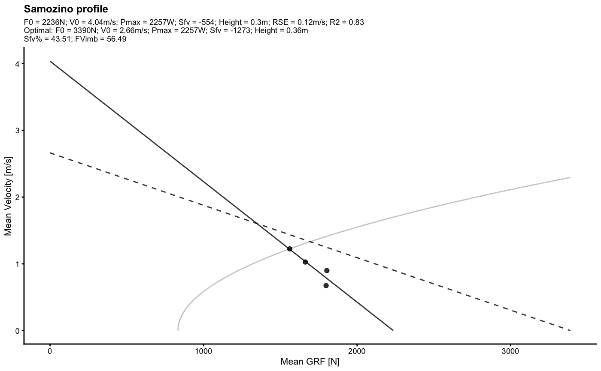

make_samozino_profile generates Samozino profile from squat jump data. When both aerial_time and
height are forwarded to the function, only height is used to estimate mean GRF.
make_samozino_profile( bodyweight, push_off_distance, external_load, height, aerial_time, gravity_const = 9.81, plot = TRUE )
| bodyweight | Numeric value |
|---|---|
| push_off_distance | Numeric value |
| external_load | Numeric vector |
| height | Numeric vector |
| aerial_time | Numeric vector |
| gravity_const | Numeric vector. Default 9.81 |
| plot | TRUE/FALSE. Default is TRUE |
List of Samozino profile parameters
Samozino, Pierre. ‘A Simple Method for Measuring Lower Limb Force, Velocity and Power Capabilities During Jumping’. In Biomechanics of Training and Testing, edited by Jean-Benoit Morin and Pierre Samozino, 65–96. Cham: Springer International Publishing, 2018. https://doi.org/10.1007/978-3-319-05633-3_4.
———. ‘Optimal Force-Velocity Profile in Ballistic Push-off: Measurement and Relationship with Performance’. In Biomechanics of Training and Testing, edited by Jean-Benoit Morin and Pierre Samozino, 97–119. Cham: Springer International Publishing, 2018. https://doi.org/10.1007/978-3-319-05633-3_5.
Samozino, Pierre, Jean-Benoît Morin, Frédérique Hintzy, and Alain Belli. ‘Jumping Ability: A Theoretical Integrative Approach’. Journal of Theoretical Biology 264, no. 1 (May 2010): 11–18. https://doi.org/10.1016/j.jtbi.2010.01.021.
Samozino, Pierre, Enrico Rejc, Pietro Enrico Di Prampero, Alain Belli, and Jean-Benoît Morin. ‘Optimal Force–Velocity Profile in Ballistic Movements—Altius’: Medicine & Science in Sports & Exercise 44, no. 2 (February 2012): 313–22. https://doi.org/10.1249/MSS.0b013e31822d757a.
require(tidyverse) data("testing_data") with( filter(testing_data, athlete == "Jack"), make_samozino_profile( bodyweight = bodyweight, push_off_distance = push_off_distance, external_load = external_load, aerial_time = aerial_time, plot = TRUE ) )#> $F0 #> [1] 2235.995 #> #> $F0_rel #> [1] 26.30583 #> #> $V0 #> [1] 4.037337 #> #> $Pmax #> [1] 2256.867 #> #> $Pmax_rel #> [1] 26.55137 #> #> $Sfv #> [1] -553.8293 #> #> $Sfv_rel #> [1] -6.515638 #> #> $take_off_velocity #> [1] 2.444065 #> #> $height #> [1] 0.3044574 #> #> $optimal_F0 #> [1] 3389.95 #> #> $optimal_F0_rel #> [1] 39.88176 #> #> $optimal_V0 #> [1] 2.663009 #> #> $optimal_height #> [1] 0.3614484 #> #> $optimal_height_diff #> [1] 0.05699097 #> #> $optimal_height_ratio #> [1] 1.187189 #> #> $optimal_Pmax #> [1] 2256.867 #> #> $optimal_Pmax_rel #> [1] 26.55137 #> #> $optimal_take_off_velocity #> [1] 2.663009 #> #> $optimal_take_off_velocity_diff #> [1] 0.2189439 #> #> $optimal_take_off_velocity_ratio #> [1] 1.089582 #> #> $optimal_Sfv #> [1] -1272.977 #> #> $optimal_Sfv_rel #> [1] -14.9762 #> #> $Sfv_perc #> [1] 43.50661 #> #> $FV_imbalance #> [1] 56.49339 #> #> $probe_IMB #> [1] 42.45125 #> #> $RSE #> [1] 0.1172931 #> #> $R_squared #> [1] 0.8280585 #>